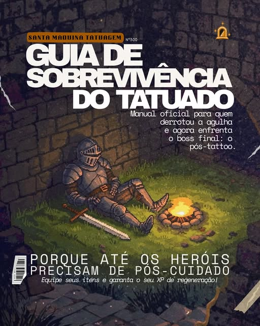
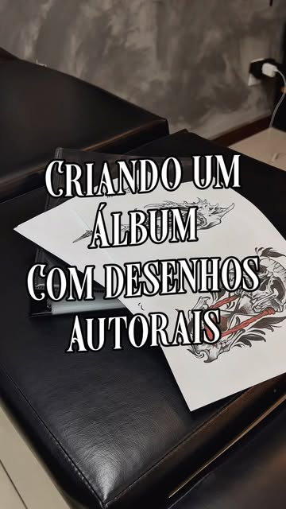

Lavar
Água e sabonete neutro, com as mãos limpas, sem esfregar. Seque com papel toalha, só encostando.
Da ideia à pele
Toda tattoo passa por cinco níveis. Os quatro primeiros a gente joga junto no estúdio. O último é com você, em casa, no modo hard.

Mapa de níveis
Nível 1 · Briefing e referência
Você conta a ideia, o local do corpo e o tamanho, e manda até cinco imagens de referência pelo site. Personagem de game, anime, criatura, caveira: quanto mais referência, melhor.
+ XP: escolha o artista pelo estilo dele.
Nível 2 · Desenho e arte
O artista transforma a referência em arte autoral, pensada para o seu corpo: contraste certo para o preto segurar e composição que encaixa no músculo. Também dá para escolher um flash do álbum autoral.

Nível 3 · Aprovação e orçamento
Você vê a arte e o valor antes de qualquer coisa. Nada vai para a pele sem o seu “sim”. Ajustes entram aqui.
Nível 4 · Sessão
Decalque na pele, conferência no espelho e máquina ligada. Venha alimentado, hidratado e com roupa que deixe o local livre. Projetos grandes podem ter mais de uma sessão.
Nível 5 · Cicatrização
A tattoo termina de ficar pronta em casa. É aqui que muito aventureiro perde vida. Siga o guia abaixo e o preto continua preto por anos.
Guia de sobrevivência do tatuado
Porque até os heróis precisam de pós-cuidado. Orientação geral: na sessão, siga sempre o que o seu artista indicar para a sua peça.
Água e sabonete neutro, com as mãos limpas, sem esfregar. Seque com papel toalha, só encostando.
Camada fina da pomada ou do hidratante indicado, algumas vezes ao dia. Nada de encharcar.
Vai coçar e descascar: é normal. Arrancar casquinha é dano crítico na tinta.
Sem sol direto, praia, piscina ou mar até cicatrizar. Depois, protetor solar sempre: é o escudo contra o desbotamento.
Roupa folgada e limpa por cima nos primeiros dias, para não grudar nem abafar.
Cicatrizou e algum ponto falhou? Peça o retoque pelo site.
Pergaminho de dúvidas
Não existe tabela: o valor depende do tamanho, do local do corpo e do detalhe. O orçamento vem antes de marcar, sem compromisso.
A Santa Máquina é um estúdio geek: referência de game, anime, filme e série é bem-vinda. No pedido, marque a referência e anexe as imagens.
Pode. Escolha “Trago meu desenho” no pedido e anexe a imagem. O artista ajusta para funcionar na pele.
São desenhos criados pelo próprio artista, prontos para tatuar. Escolha a missão “Desenho autoral (flash)” e conte qual arte te chamou.
Depende da região e de cada pessoa. Áreas com mais osso costumam incomodar mais. Venha descansado e alimentado.
Ao aceitar a missão você recebe um código. Com ele, consulta ou cancela pelo site até 2 horas antes. Depois disso, chame no WhatsApp.
Em Salvador. O endereço completo é passado pelo WhatsApp do estúdio, (71) 98821-5058.
Continue?
Selecione o personagem e mostre o mapa da sua ideia.